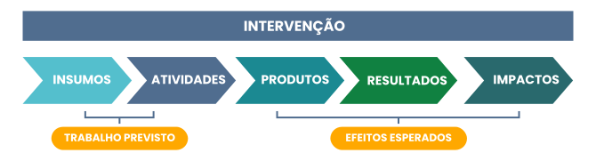

TÓPICO 3
ESTRATÉGIAS E FERRAMENTAS PARA O MONITORAMENTO E A AVALIAÇÃO NO COTIDIANO NA APS
TÓPICO 3
ESTRATÉGIAS E FERRAMENTAS PARA O MONITORAMENTO E A AVALIAÇÃO NO COTIDIANO NA APS
Os dois indicadores do exemplo podem expressar significados diferentes em relação a uma mesma intervenção.
O indicador de mortalidade infantil expressa os efeitos da atenção pré-natal na população-alvo, ou seja, expressa a mudança na situação de saúde da população.
Já o indicador número de consultas de pré-natal por gestante indica se a APS está realizando o número indicado de consultas para cada gestante, ou seja, está indicando se o trabalho previsto está sendo realizado.
